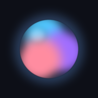

Ready
Press Speak and say anything.
Voice, language and the AI brain.
On-device recognition downloads once, then understands you with no internet.

Opens full-screen like an app and works offline once the AI model is downloaded.
Open your browser menu (⋮) and choose Install app or Add to Home screen.